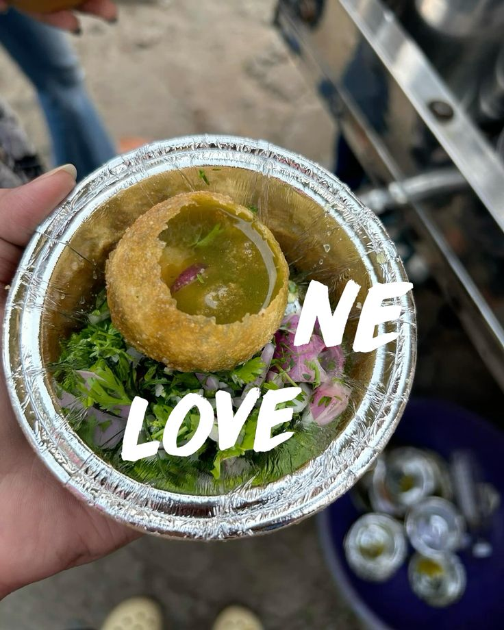

My all-time favorite — messy, chaotic, and absolutely perfect. Every bite is a burst of spice, tang, and happiness. It is said that we always eat pani puri with the people very close to our heart. Golgappe has always been my favourite since childhood and it's always a mood changer for me.
Preparation Time: 20 minutes
Difficulty: Easy
Be careful: Eat immediately before puris get soggy.
Ready to slay your hunger! 🔥